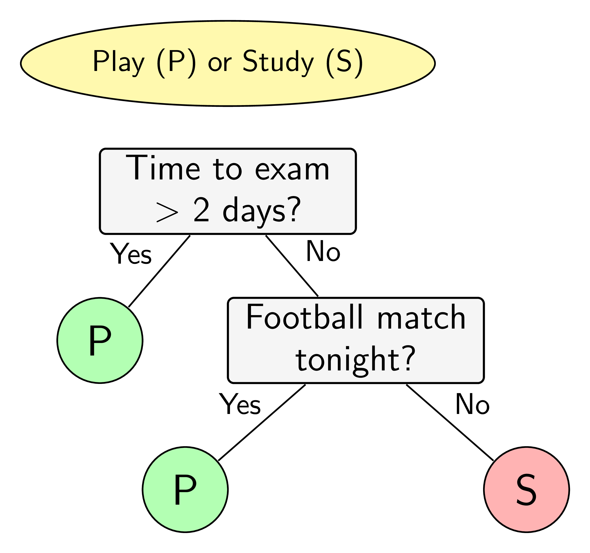
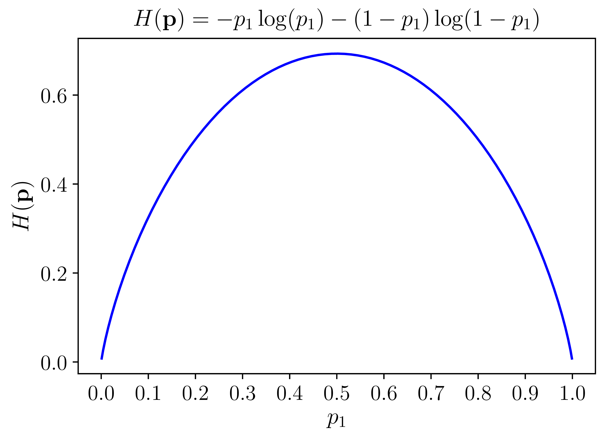
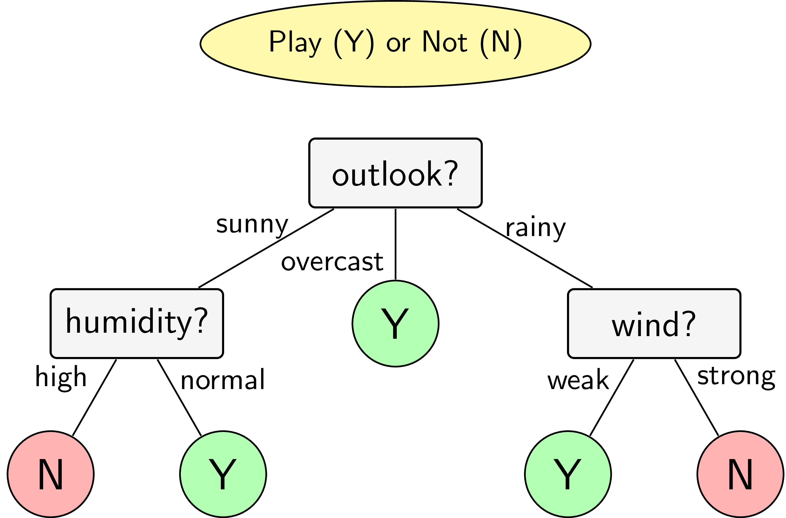

Trong trang này:
1. Giới thiệu
Sắp đến kỳ thi, một cậu sinh viên tự đặt ra quy tắc học hay chơi của mình như sau. Nếu còn nhiều hơn hai ngày tới ngày thi, cậu ra sẽ đi chơi. Nếu còn không quá hai ngày và đêm hôm đó có một trận bóng đá, cậu sẽ sang nhà bạn chơi và cùng xem bóng đêm đó. Cậu sẽ chỉ học trong các trường hợp còn lại. Việc ra quyết định của cậu sinh viên này có thể được mô tả trên sơ đồ trong Hình 1. Hình ellipse nền vàng thể hiện quyết định cần được đưa ra. Quyết định này phụ thuộc vào các câu trả lời của các câu hỏi trong các ô hình chữ nhật màu xám. Dựa trên các câu trả lời, quyết định cuối cùng được cho trong các hình tròn màu lục (chơi) và đỏ (học). Sơ đồ trong Hình 1 còn được gọi là một cây quyết định.
|  | Hình 1: Ví dụ về việc ra quyết định dựa trên các câu hỏi. |
Việc quan sát, suy nghĩ và ra các quyết định của con người thường được bắt đầu từ các câu hỏi. Machine learning cũng có một mô hình ra quyết định dựa trên các câu hỏi. Mô hình này có tên là cây quyết định (decision tree).
Xét ví dụ trên Hình 2a với hai class màu lục và đỏ trên không gian hai chiều. Nhiệm vụ là đi tìm ranh giới đơn giản giúp phân chia hai class này. Hay nói cách khác, đây là một bài toán classification, ta cần xây dựng một bộ phân lớp để quyết định việc một điểm dữ liệu mới thuộc vào class nào. Quan sát hình ta thấy rằng ranh giới cho hai class trong bài toán này khá đơn giản–chúng là các đường song song với các trục toạ độ. Nếu một điểm có thành phần thứ nhất, , nhỏ hơn ngưỡng , ta quyết định ngay được rằng nó thuộc class lục. Ngoài ra, nếu thành phần thứ hai, lớn hơn ngưỡng , ta quyết định nó cũng thuộc vào class lục. Xét tiếp, nếu thành phần thứ nhất, , lớn hơn ngưỡng , ta quyết định nó thuộc vào class lục. Các điểm không thoả mãn các điều kiện trên được xếp vào class đỏ. Việc ra quyết định một điểm thuộc class nào được mô tả trên decision tree trên Hình 2b.
Trong decision tree, các ô màu xám, lục, đỏ trên Hình 2 được gọi là các node. Các node thể hiện đầu ra (màu lục và đỏ) được gọi là node lá (leaf node hoặc terminal node). Các node thể hiện câu hỏi là các non-leaf node. Non-leaf node trên cùng (câu hỏi đầu tiên) được gọi là node gốc (root node). Các non-leaf node thường có hai hoặc nhiều node con (child node). Các child node này có thể là một leaf node hoặc một non-leaf node khác. Các child node có cùng bố mẹ được gọi là sibling node. Nếu tất cả các non-leaf node chỉ có hai child node, ta nói rằng đó là một binary decision tree (cây quyết định nhị phân). Các câu hỏi trong binary decision tree đều có thể đưa được về dạng câu hỏi đúng hay sai. Các decision tree mà một leaf node có nhiều child node cũng có thể được đưa về dạng một binary decision tree. Điều này có thể đạt được vì hầu hết các câu hỏi đều có thể được đưa về dạng câu hỏi đúng sai.
Ví dụ, ta có thể xác định được tuổi của một người dựa trên nhiều câu hỏi đúng sai dạng: tuổi của bạn lớn hơn đúng không? (Đây chính là thuật toán tìm kiếm nhị phân – binary search.)
Decision tree là một mô hình supervised learning, có thể được áp dụng vào cả hai bài toán classification và regression. Việc xây dựng một decision tree trên dữ liệu huấn luyện cho trước là việc đi xác định các câu hỏi và thứ tự của chúng. Một điểm đáng lưu ý của decision tree là nó có thể làm việc với các đặc trưng (trong các tài liệu về decision tree, các đặc trưng thường được gọi là thuộc tính – attribute) dạng categorical, thường là rời rạc và không có thứ tự. Ví dụ, mưa, nắng hay xanh, đỏ, v.v. Decision tree cũng làm việc với dữ liệu có vector đặc trưng bao gồm cả thuộc tính dạng categorical và liên tục (numeric). Một điểm đáng lưu ý nữa là decision tree ít yêu cầu việc chuẩn hoá dữ liệu.
Trong bài viết này, chúng ta sẽ làm quen với một thuật toán xây dựng decision tree ra đời từ rất sớm và rất phổ biến: Iterative Dichotomiser 3 (ID3).
Quay trở lại với nhiệm vụ chính của việc xây dựng một decision tree: các câu hỏi nên được xây dựng như thế nào, và thứ tự của chúng ra sao. Các câu hỏi này thường được áp dụng lên từng thuộc tính, hoặc một tổ hợp tuyến tính của các thuộc tính. Cách thứ nhất, áp dụng lên từng thuộc tính, được sử dụng nhiều hơn vì tính đơn giản của nó. Với các thuộc tính dạng categorical, câu hỏi sẽ là Nó rơi vào category nào? hoặc Nó có rơi vào category nào đó không? với trường hợp nhị phân. Với các thuộc tính dạng liên tục, câu hỏi có thể là Nó nằm vào khoảng giá trị nào? hoặc Nó có lớn hơn một ngưỡng nào đó không?.
ID3 là một thuật toán decision tree được áp dụng cho các bài toán classification mà tất cả các thuộc tính đều ở dạng categorical. Trong bài tiếp theo, chúng ta sẽ làm quen với một thuật toán khác có tên là Classification and Regression Tree (CART)–có thể được áp dụng vào cả hai loại classification và regression, như tên gọi của nó–làm việc với cả thuộc tính dạng categorical và liên tục.
2. ID3
2.1. Ý tưởng
Trong ID3, chúng ta cần xác định thứ tự của thuộc tính cần được xem xét tại mỗi bước. Với các bài toán có nhiều thuộc tính và mỗi thuộc tính có nhiều giá trị khác nhau, việc tìm được nghiệm tối ưu thường là không khả thi. Thay vào đó, một phương pháp đơn giản thường được sử dụng là tại mỗi bước, một thuộc tính tốt nhất sẽ được chọn ra dựa trên một tiêu chuẩn nào đó (chúng ta sẽ bàn sớm). Với mỗi thuộc tính được chọn, ta chia dữ liệu vào các child node tương ứng với các giá trị của thuộc tính đó rồi tiếp tục áp dụng phương pháp này cho mỗi child node. Việc chọn ra thuộc tính tốt nhất ở mỗi bước như thế này được gọi là cách chọn greedy (tham lam). Cách chọn này có thể không phải là tối ưu, nhưng trực giác cho chúng ta thấy rằng cách làm này sẽ gần với cách làm tối ưu. Ngoài ra, cách làm này khiến cho bài toán cần giải quyết trở nên đơn giản hơn.
Sau mỗi câu hỏi, dữ liệu được phân chia vào từng child node tương ứng với các câu trả lời cho câu hỏi đó. Câu hỏi ở đây chính là một thuộc tính, câu trả lời chính là giá trị của thuộc tính đó. Để đánh giá chất lượng của một cách phân chia, chúng ta cần đi tìm một phép đo.
Trước hết, thế nào là một phép phân chia tốt? Bằng trực giác, một phép phân chia là tốt nhất nếu dữ liệu trong mỗi child node hoàn toàn thuộc vào một class–khi đó child node này có thể được coi là một leaf node, tức ta không cần phân chia thêm nữa. Nếu dữ liệu trong các child node vẫn lẫn vào nhau theo tỉ lệ lớn, ta coi rằng phép phân chia đó chưa thực sự tốt. Từ nhận xét này, ta cần có một hàm số đo độ tinh khiết (purity), hoặc độ vẩn đục (impurity) của một phép phân chia. Hàm số này sẽ cho giá trị thấp nhất nếu dữ liệu trong mỗi child node nằm trong cùng một class (tinh khiết nhất), và cho giá trị cao nếu mỗi child node có chứa dữ liệu thuộc nhiều class khác nhau.
Một hàm số có các đặc điểm này và được dùng nhiều trong lý thuyết thông tin là hàm entropy.
2.2. Hàm số entropy
Cho một phân phối xác suất của một biến rời rạc có thể nhận giá trị khác nhau . Giả sử rằng xác suất để nhận các giá trị này là với . Ký hiệu phân phối này là . Entropy của phân phối này được định nghĩa là trong đó là logarit tự nhiên (Một số tài liệu dùng logarit cơ số 2, nhưng giá trị của chỉ khác đi bằng cách nhân với một hằng số.) và quy ước .
Xét một ví dụ với được cho trên Hình 3. Trong trường hợp là tinh khiết nhất, tức một trong hai giá trị bằng 1, giá trị kia bằng 0, entropy của phân phối này là . Khi là vẩn đục nhất, tức cả hai giá trị , hàm entropy đạt giá trị cao nhất.
|  | Hình 3: Đồ thị của hàm entropy với . |
Tổng quát lên với , hàm entropy đạt giá trị nhỏ nhất nếu có một giá trị , đạt giá trị lớn nhất nếu tất cả các bằng nhau ((việc này có thể được chứng minh bằng phương pháp nhân tử Lagrange).
Những tính chất này của hàm entropy khiến nó được sử dụng trong việc đo độ vẩn đục của một phép phân chia của ID3. Vì lý do này, ID3 còn được gọi là entropy-based decision tree.
2.3. Thuật toán ID3
Trong ID3, tổng có trọng số của entropy tại các leaf-node sau khi xây dựng decision tree được coi là hàm mất mát của decision tree đó. Các trọng số ở đây tỉ lệ với số điểm dữ liệu được phân vào mỗi node. Công việc của ID3 là tìm các cách phân chia hợp lý (thứ tự chọn thuộc tính hợp lý) sao cho hàm mất mát cuối cùng đạt giá trị càng nhỏ càng tốt. Như đã đề cập, việc này đạt được bằng cách chọn ra thuộc tính sao cho nếu dùng thuộc tính đó để phân chia, entropy tại mỗi bước giảm đi một lượng lớn nhất. Bài toán xây dựng một decision tree bằng ID3 có thể chia thành các bài toán nhỏ, trong mỗi bài toán, ta chỉ cần chọn ra thuộc tính giúp cho việc phân chia đạt kết quả tốt nhất. Mỗi bài toán nhỏ này tương ứng với việc phân chia dữ liệu trong một non-leaf node. Chúng ta sẽ xây dựng phương pháp tính toán dựa trên mỗi node này.
Xét một bài toán với class khác nhau. Giả sử ta đang làm việc với một non-leaf node với các điểm dữ liệu tạo thành một tập với số phần tử là . Giả sử thêm rằng trong số điểm dữ liệu này, điểm thuộc vào class . Xác suất để mỗi điểm dữ liệu rơi vào một class được xấp xỉ bằng (maximum likelihood estimation). Như vậy, entropy tại node này được tính bởi: Tiếp theo, giả sử thuộc tính được chọn là . Dựa trên , các điểm dữ liệu trong được phân ra thành child node với số điểm trong mỗi child node lần lượt là . Ta định nghĩa
là tổng có trọng số entroy của mỗi child node–được tính tương tự như (2). Việc lấy trọng số này là quan trọng vì các node thường có số lượng điểm khác nhau.
Tiếp theo, ta định nghĩa information gain dựa trên thuộc tính :
Trong ID3, tại mỗi node, thuộc tính được chọn được xác định dựa trên:
tức thuộc tính khiến cho information gain đạt giá trị lớn nhất.
Câu hỏi tiếp theo là khi nào thì dừng cách phân chia? Câu trả lời sẽ được đề cập sau mục ví dụ dưới đây.
2.4. Ví dụ
Để mọi thứ được rõ ràng hơn, chúng ta cùng xem ví dụ với dữ liệu huấn luyện được cho trong Bảng dưới đây. Bảng dữ liệu này được lấy từ cuốn sách Data Mining: Practical Machine Learning Tools and Techniques, trang 11. Đây là một bảng dữ liệu được sử dụng rất nhiều trong các bài giảng về decision tree. Bảng dữ liệu này mô tả mối quan hệ giữa thời tiết trong 14 ngày (bốn cột đầu, không tính cột id) và việc một đội bóng có chơi bóng hay không (cột cuối cùng). Nói cách khác, ta phải dự đoán giá trị ở cột cuối cùng nếu biết giá trị của bốn cột còn lại.
| id | outlook | temperature | humidity | wind | play |
|---|---|---|---|---|---|
| 1 | sunny | hot | high | weak | no |
| 2 | sunny | hot | high | strong | no |
| 3 | overcast | hot | high | weak | yes |
| 4 | rainy | mild | high | weak | yes |
| 5 | rainy | cool | normal | weak | yes |
| 6 | rainy | cool | normal | strong | no |
| 7 | overcast | cool | normal | strong | yes |
| 8 | sunny | mild | high | weak | no |
| 9 | sunny | cool | normal | weak | yes |
| 10 | rainy | mild | normal | weak | yes |
| 11 | sunny | mild | normal | strong | yes |
| 12 | overcast | mild | high | strong | yes |
| 13 | overcast | hot | normal | weak | yes |
| 14 | rainy | mild | high | strong | no |
Có bốn thuộc tính thời tiết:
-
Outlook nhận một trong ba giá trị: sunny, overcast, rainy.
-
Temperature nhận một trong ba giá trị: hot, cool, mild.
-
Humidity nhận một trong hai giá trị: high, normal.
-
Wind nhận một trong hai giá trị: weak, strong.
(Tổng cộng có loại thời tiết khác nhau, trong đó 14 loại được thể hiện trong bảng.)
Đây có thể được coi là một bài toán dự đoán liệu đội bóng có chơi bóng không dựa trên các quan sát thời tiết. Ở đây, các quan sát đều ở dạng categorical. Cách dự đoán dưới đây tương đối đơn giản và khá chính xác, có thể không phải là cách ra quyết định tốt nhất:
-
Nếu outlook = sunny và humidity = high thì play = no.
-
Nếu outlook = rainy và windy = true thì play = no.
-
Nếu outlook = overcast thì play = yes.
-
Ngoài ra, nếu humidity = normal thì play = yes.
-
Ngoài ra, play = yes.
Chúng ta sẽ cùng tìm thứ tự các thuộc tính bằng thuật toán ID3.
Trong 14 giá trị đầu ra ở Bảng trên, có năm giá trị bằng no và chín giá trị bằng yes. Entroy tại root node của bài toán là: Tiếp theo, chúng ta tính tổng có trọng số entropy của các child node nếu chọn một trong các thuộc tính outlook, temperature, humidity, wind, play để phân chia dữ liệu.
Xét thuộc tính outlook. Thuộc tính này có thể nhận một trong ba giá trị sunny, overcast, rainy. Mỗi một giá trị sẽ tương ứng với một child node. Gọi tập hợp các điểm trong mỗi child node này lần lượt là với tương ứng phần tử. Sắp xếp lại Bảng ban đầu theo thuộc tính outlook ta đạt được ba Bảng nhỏ sau đây.
| id | outlook | temperature | humidity | wind | play |
|---|---|---|---|---|---|
| 1 | sunny | hot | high | weak | no |
| 2 | sunny | hot | high | strong | no |
| 8 | sunny | mild | high | weak | no |
| 9 | sunny | cool | normal | weak | yes |
| 11 | sunny | mild | normal | strong | yes |
| id | outlook | temperature | humidity | wind | play |
|---|---|---|---|---|---|
| 3 | overcast | hot | high | weak | yes |
| 7 | overcast | cool | normal | strong | yes |
| 12 | overcast | mild | high | strong | yes |
| 13 | overcast | hot | normal | weak | yes |
| id | outlook | temperature | humidity | wind | play |
|---|---|---|---|---|---|
| 4 | rainy | mild | high | weak | yes |
| 5 | rainy | cool | normal | weak | yes |
| 6 | rainy | cool | normal | strong | no |
| 10 | rainy | mild | normal | weak | yes |
| 14 | rainy | mild | high | strong | no |
Quan sát nhanh ta thấy rằng child node ứng với outlook = overcast sẽ có entropy bằng 0 vì tất cả output đều là yes. Hai child node còn lại với có entropy khá cao vì tần suất output bằng yes hoặc no là xấp xỉ nhau. Tuy nhiên, hai child node này có thể được phân chia tiếp dựa trên hai thuộc tính humidity và wind.
Bạn đọc có thể kiểm tra được rằng
Xét thuộc tính temperature, ta có phân chia như các Bảng dưới đây.
| id | outlook | temperature | humidity | wind | play |
|---|---|---|---|---|---|
| 1 | sunny | hot | high | weak | no |
| 2 | sunny | hot | high | strong | no |
| 3 | overcast | hot | high | weak | yes |
| 13 | overcast | hot | normal | weak | yes |
| id | outlook | temperature | humidity | wind | play |
|---|---|---|---|---|---|
| 4 | rainy | mild | high | weak | yes |
| 8 | sunny | mild | high | weak | no |
| 10 | rainy | mild | normal | weak | yes |
| 11 | sunny | mild | normal | strong | yes |
| 12 | overcast | mild | high | strong | yes |
| 14 | rainy | mild | high | strong | no |
| id | outlook | temperature | humidity | wind | play |
|---|---|---|---|---|---|
| 5 | rainy | cool | normal | weak | yes |
| 6 | rainy | cool | normal | strong | no |
| 7 | overcast | cool | normal | strong | yes |
| 9 | sunny | cool | normal | weak | yes |
Gọi là ba tập con tương ứng với temperature bằng hot, mild, cool. Bạn đọc có thể tính được
Việc tính toán với hai thuộc tính còn lại được dành cho bạn đọc. Nếu các kết quả là giống nhau, chúng sẽ bằng: Như vậy, thuộc tính cần chọn ở bước đầu tiên là outlook vì đạt giá trị nhỏ nhất (information gain là lớn nhất).
Sau bước phân chia đầu tiên này, ta nhận được ba child node với các phần tử như trong ba Bảng phân chia theo outlook. Child node thứ hai không cần phân chia tiếp vì nó đã tinh khiết. Với child node thứ nhất, ứng với outlook = sunny, kết quả tính được bằng ID3 sẽ cho chúng ta thuộc tính humidity vì tổng trọng số của entropy sau bước này sẽ bằng 0 với output bằng yes khi và chỉ khi humidity = normal. Tương tự, child node ứng với outlook = wind sẽ được tiếp tục phân chia bởi thuộc tính wind với output bằng yes khi và chỉ khi wind = weak.
Như vậy, cây quyết định cho bài toán này dựa trên ID3 sẽ có dạng như trong Hình 4.
|  | Hình 4: Decision tree cho bài toán ví dụ sử dụng thuật toán ID3. |
2.5. Điều kiện dừng
Trong các thuật toán decision tree nói chung và ID3 nói riêng, nếu ta tiếp tục phân chia các node chưa tinh khiết, ta sẽ thu được một tree mà mọi điểm trong tập huấn luyện đều được dự đoán đúng (giả sử rằng không có hai input giống nhau nào cho output khác nhau). Khi đó, tree có thể sẽ rất phức tạp (nhiều node) với nhiều leaf node chỉ có một vài điểm dữ liệu. Như vậy, nhiều khả năng overfitting sẽ xảy ra.
Để tránh overfitting, một trong số các phương pháp sau có thể được sử dụng. Tại một node, nếu một trong số các điều kiện sau đây xảy ra, ta không tiếp tục phân chia node đó và coi nó là một leaf node:
-
nếu node đó có entropy bằng 0, tức mọi điểm trong node đều thuộc một class.
-
nếu node đó có số phần tử nhỏ hơn một ngưỡng nào đó. Trong trường hợp này, ta chấp nhận có một số điểm bị phân lớp sai để tránh overfitting. Class cho leaf node này có thể được xác định dựa trên class chiếm đa số trong node.
-
nếu khoảng cách từ node đó đến root node đạt tới một giá trị nào đó. Việc hạn chế chiều sâu của tree này làm giảm độ phức tạp của tree và phần nào giúp tránh overfitting.
-
nếu tổng số leaf node vượt quá một ngưỡng nào đó.
-
nếu việc phân chia node đó không làm giảm entropy quá nhiều (information gain nhỏ hơn một ngưỡng nào đó).
Ngoài các phương pháp trên, một phương pháp phổ biến khác được sử dụng để tránh overfitting là pruning, tạm dịch là cắt tỉa.
2.6. Pruning
Pruning là một kỹ thuật regularization để tránh overfitting cho decision tree nói chung. Trong pruning, một decision tree sẽ được xây dựng tới khi mọi điểm trong training set đều được phân lớp đúng. Sau đó, các leaf node có chung một non-leaf node sẽ được cắt tỉa và non-leaf node đó trở thành một leaf-node, với class tương ứng với class chiếm đa số trong số mọi điểm được phân vào node đó. Việc cắt tỉa cây quyết định này có thể được xác định dựa vào các cách sau.
-
Dựa vào một validation set. Trước tiên, training set được tách ra thành một training set nhỏ hơn và một validation set. Decision tree được xây dựng trên training set cho tới khi mọi điểm trong training set được phân lớp đúng. Sau đó, đi ngược từ các leaf node, cắt tỉa các sibling node của nó và giữ lại node bố mẹ nếu độ chính xác trên validation set được cải thiện. Khi nào độ chính xác trên validation set không được cải thiện nữa, quá trình pruning dừng lại. Phương pháp này còn được gọi là reduced error pruning.
-
Dựa vào toàn bộ data set. Trong phương pháp này, ta không tách tập training ban đầu ra mà sử dụng toàn bộ dữ liệu trong tập này cho việc xây dựng decision tree. Một ví dụ cho việc này là cộng thêm một đại lượng regularization vào hàm mất mát. Đại lượng regularization sẽ lớn nếu số leaf node là lớn. Cụ thể, giả sử decision tree cuối cùng có leaf node, tập hợp các điểm huấn luyện rơi vào mỗi leaf node lần lượt là . Khi đó, regularized loss của ID3 có thể được tính tương tự như (3): với ký hiệu số phần tử của tập hợp và chính là entropy của leaf node tương ứng với , được tính tương tự như (2), và là một số thực dương không quá lớn. Giá trị của hàm số này nhỏ nếu cả data loss–số hạng thứ nhất–nhỏ (entropy tại mỗi node là thấp) và regularization–số hạng thứ hai–cũng nhỏ (số leaf node là ít). Vì hàm mất mát trong (5) là một hàm rời rạc, rất khó để trực tiếp tối ưu hàm này. Việc tối ưu có thể được thực hiện thông qua pruning như sau. Trước hết, xây dựng một decision tree mà mọi điểm trong tập huấn luyện đều được phân loại đúng (toàn bộ các entopy của các node bằng 0). Lúc này data loss bằng 0 nhưng regularization có thể lớn, khiến cho lớn. Sau đó, ta có thể tỉa dần các leaf node sao cho giảm. Việc cắt tỉa được lặp lại đến khi không thể giảm được nữa.
-
Các kỹ thuật pruning khác có thể được tìm thấy tại đây.
3. Lập trình Python cho ID3
Module DecisionTree trong sklearn không thực hiện thuật toán ID3 mà là một thuật toán khác được đề cập trong bài tiếp theo. Phiên bản hiện tại trong sklearn chưa hỗ trợ các thuộc tính ở dạng categorical. Với dữ liệu có thuộc tính categorical, cách thường dùng là chuyển đổi các thuộc tính đó sang dạng numerical (1, 2, 3 cho mỗi giá trị). Chẳng hạn, các giá trị hot, mild, cool có thể lần lượt được thay bằng 1, 2, 3. Cách làm này có hạn chế vì trong cách chuyển đổi này, mild là trung bình cộng của hot và cool, nhưng nếu thứ tự các giá trị được đặt khác đi, việc chuyển đổi có thể ảnh hưởng lớn tới kết quả. Nhắc lại rằng các thuộc tính categorical, ví dụ màu sắc, thường không có tính thứ tự.
Dưới đây là cách lập trình của tôi cho ID3, làm việc với cả dữ liệu ở dạng categorical. (Source code có thể được tìm thấy tại đây)
Xây dựng class TreeNode
from __future__ import print_function
import numpy as np
import pandas as pd
class TreeNode(object):
def __init__(self, ids = None, children = [], entropy = 0, depth = 0):
self.ids = ids # index of data in this node
self.entropy = entropy # entropy, will fill later
self.depth = depth # distance to root node
self.split_attribute = None # which attribute is chosen, it non-leaf
self.children = children # list of its child nodes
self.order = None # order of values of split_attribute in children
self.label = None # label of node if it is a leaf
def set_properties(self, split_attribute, order):
self.split_attribute = split_attribute # split at which attribute
self.order = order # order of this node's children
def set_label(self, label):
self.label = label # set label if the node is a leaf
Hàm tính entropy dựa trên tần suất
Trong hàm này, chúng ta phải chú ý bỏ các tần suất bằng 0 đi vì logarit tại đây không xác định.
def entropy(freq):
# remove prob 0
freq_0 = freq[np.array(freq).nonzero()[0]]
prob_0 = freq_0/float(freq_0.sum())
return -np.sum(prob_0*np.log(prob_0))
Phần còn lại của source code (bao gồm class DecisionTreeID3) có
thể được tìm thấy tại đây.
Dữ liệu trong trong ví dụ được được lưu trong file
weather.csv. Việc huấn luyện decision tree dựa trên ID3 cho tập
dữ liệu này và đầu ra dự đoán cho training set được cho bởi
df = pd.DataFrame.from_csv('weather.csv')
X = df.iloc[:, :-1]
y = df.iloc[:, -1]
tree = DecisionTreeID3(max_depth = 3, min_samples_split = 2)
tree.fit(X, y)
print(tree.predict(X))
Kết quả
['no', 'no', 'yes', 'yes', 'yes', 'no', 'yes', 'no', 'yes', 'yes', 'yes', 'yes', 'yes', 'no']
Không có gì bất ngờ, decision tree dự đoán đúng 100% các điểm trong training set.
4. Thảo luận
-
Nếu một thuộc tính có thể nhận rất nhiều giá trị, decision tree thu được có thể sẽ có rất nhiều node. Xét một ví dụ về các triệu chứng của các bệnh nhân trong một bệnh viện và đầu ra là mắc bệnh hay không. Mỗi bệnh nhân có một mã số (id) khác nhau. Nếu ta sử dụng thuộc tính này cho việc huấn luyện, ta rất có thể sẽ thu được mộ decision tree mà mỗi leaf node ứng với một bệnh nhân. Lúc đó mô hình này là vô dụng, vì không thể dự đoán được việc mắc bệnh hay không của một bệnh nhân mới.
-
Khi một thuộc tính nhận giá trị liên tục, chẳng hạn temperature không còn là hot, mild, cool nữa mà là các giá trị thực liên tục, vẫn có một cách để áp dụng ID3. Ta có thể chia khoảng giá trị của thuộc tính này thành nhiều phần, mỗi phần có số lượng điểm tương đương, hoặc cũng có thể dùng các thuật toán clustering đơn giản cho một chiều dữ liệu để chia thuộc tính thành các cluster nhỏ. Lúc này, thuộc tính liên tục được chuyển về thuộc tính dạng categorical.
-
Hạn chế lớn nhất của ID3 và decision tree nói chung là việc nếu một điểm dữ liệu mới rơi vào nhầm nhánh ở ngay những lần phân chia đầu tiên, kết quả cuối cùng sẽ khác đi rất nhiều. Việc rơi vào nhầm nhánh này rất dễ xảy ra trong trường hợp thuộc tính liên tục được chia thành nhiều nhóm nhỏ, vì hai điểm có thuộc tính tương ứng rất gần nhau có thể rơi vào hai nhóm khác nhau.
5. Tài liệu tham khảo
[1] CSE5230 Tutorial: The ID3 Decision Tree Algorithm.
[2] Hands-On Machine Learning with Scikit-Learn and TensorFlow